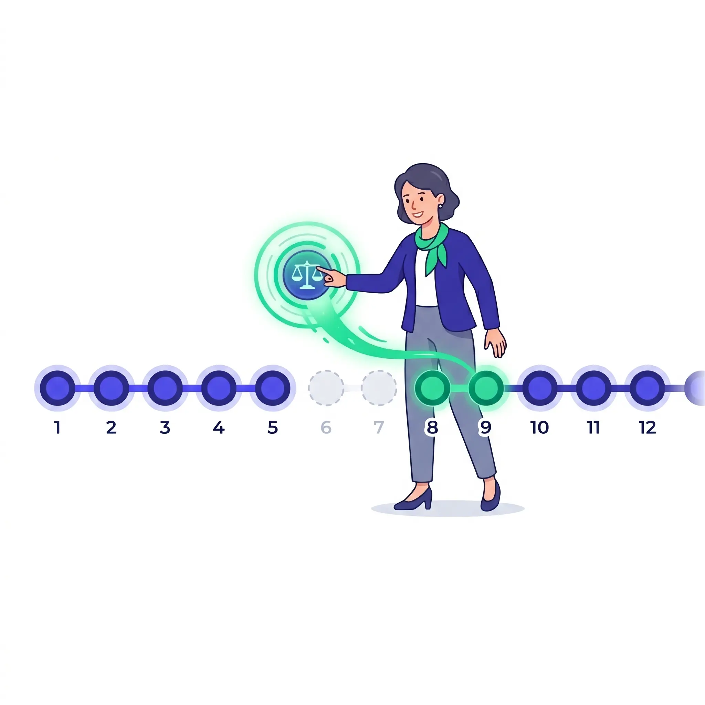
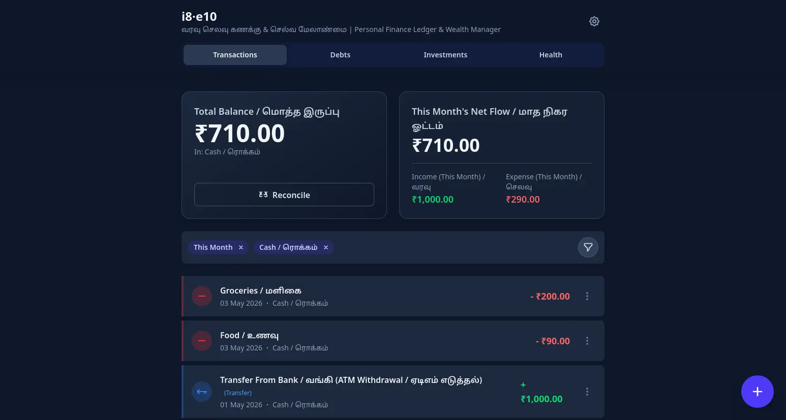
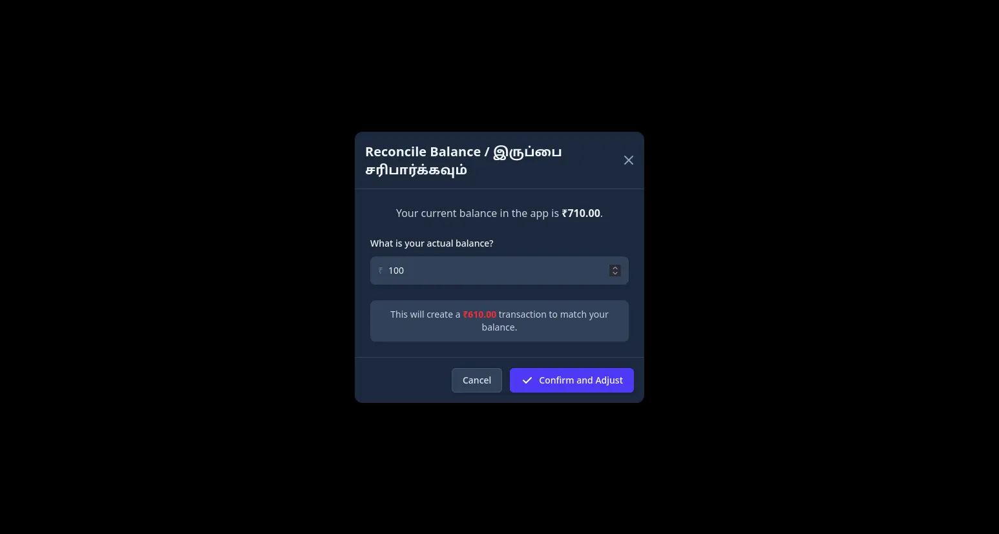
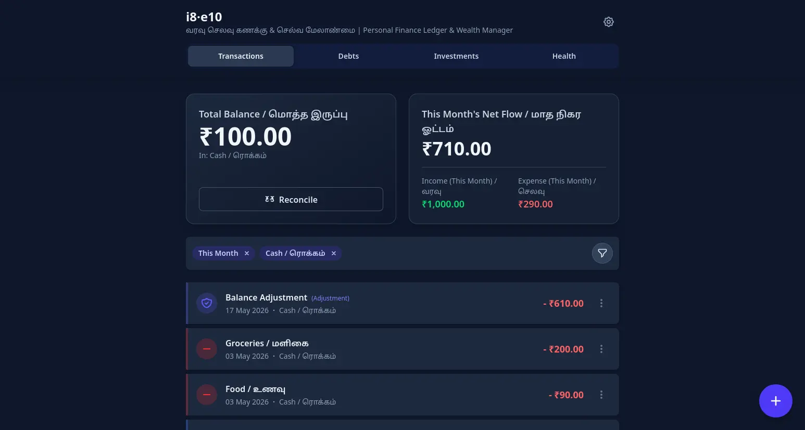

Log in 3 Seconds
Paid ₹250 cash for petrol? Open the app, log it, done — before you even put your wallet away. Three taps, no forms, no categories to fight with.
i8·e10
i8·e10 — Personal finance tracker
Most finance apps fail when you forget to log. i8·e10 is built for the comeback. Log daily in 3 seconds, or catch up on an entire week with a single click. No guilt, no friction—just a habit that actually sticks.

Life happens. Tracking stops. With i8·e10, you're never more than 3 seconds away from a fresh start. Just tap Reconcile, enter what's in your wallet, and keep moving.

Your app balance doesn't match reality. You feel like quitting.

One tap on Reconcile. Enter what you actually have. No questions asked.

App and wallet are synced. The habit is alive again. Just like that.
The Philosophy
வரவு எட்டணா, செலவு பத்தணா...
"Income is 8 annas, Expense is 10 annas; The extra 2 annas lead to a deficit in the end."
The name is a translated contraction of an old Tamil song. The i is for Income, the e is for Expense — and this app is built so the former always stays ahead of the latter.
No backend, no cloud, no account required. Everything runs on your device — and every feature exists because I hit the problem myself.
Paid ₹250 cash for petrol? Open the app, log it, done — before you even put your wallet away. Three taps, no forms, no categories to fight with.
Forgot to log for three days? Don't quit. Just reconcile. Adjust your balance to match reality and move forward—the app meets you where you are, not where you "should" have been.
"Ravi owes me ₹200" shouldn't live rent-free in your head. Track what you lent, what you owe, and your investments—all without a separate app or a sticky note.
Install it once and it works completely offline — on a flight, in a village, anywhere. Your data is secured with a 12-word phrase that only you hold. Keep it safe, and you keep everything. Smart reminders nudge you to download a clean backup zip whenever it's time.